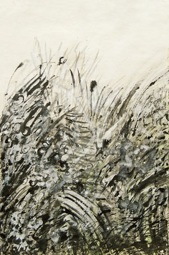

Details
Eröffnung: Lotte INGRISCH
Vortrag: Erwin LEDER liest in Anwesenheit der Autorin aus dem Buch „Kaumberg“ von Helga BUSEK
Buchpräsentation: Verlag Richard Pils
Die Ausstellung war nach Terminvereinbarung zugänglich.
Kaumberg – Zwettl – Faja dos padres

Eröffnung: Lotte INGRISCH
Vortrag: Erwin LEDER liest in Anwesenheit der Autorin aus dem Buch „Kaumberg“ von Helga BUSEK
Buchpräsentation: Verlag Richard Pils
Die Ausstellung war nach Terminvereinbarung zugänglich.